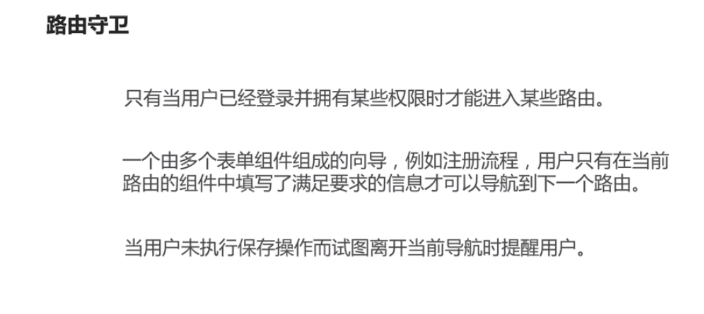
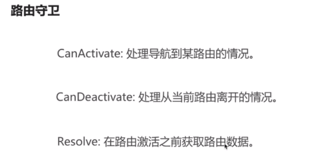
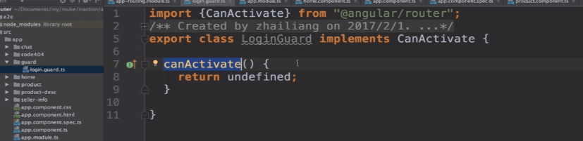
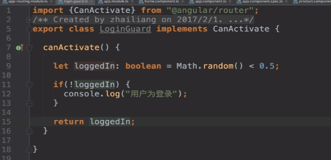
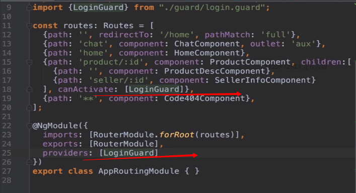
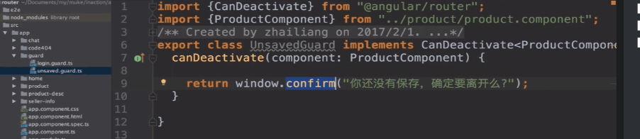
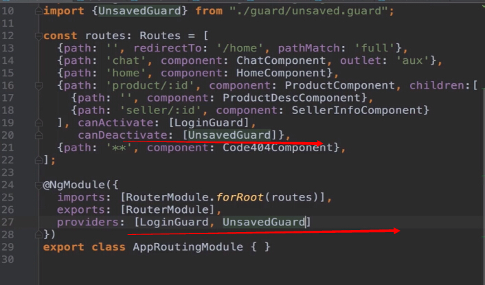

canActivate只有满足某个条件才能导航到指定路由
canDeactivate只有满足某个条件才能离开此路由
Resolve提前获取下一个路由所需要的数据

新建一个文件夹guard，再新建一个login.guard.ts的文件，用这个文件定义一个类，用这个类实现angular提供的一个接口
CanActivate，这个接口只有一个方法canActivate，我们需要实现这个方法，这个方法有一系列参数，我们直接忽略它
这个方法返回一个布尔值，angular会根据这个布尔值是true还是false决定是否让你通过



angular会依次校验canActivate所有的守卫，只有全部为true才让你通过
，这时angular并不能实例化这个守卫，所以你还必须在providers里声明（依赖注入知识）

